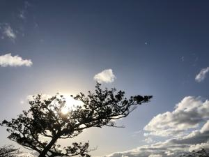
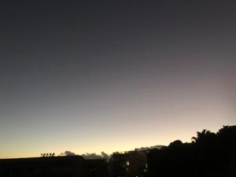

うるがいの話 ある日
最新: 『ツイスター』【うるがいの話 ある日】とは 一日だけのプログです
『うるがいの話』の最新一日だけのプログで、通信料が少なく経済的だ。カニの画像をクリックすると全ての日付が載る『うるがいの話』サイトを表示します
|
|
【うるがいの話】 うるがい(ｳﾙｶﾞｲ urugai)とは、『もずくがに』の名前でとても大きくなります。 |
|---|---|
|
|
【カミマヤーの話】 猫のことを方言でマヤーといいます。カミマヤー（kamimayaa）とは、神の猫のことです。 |
|
【たながぁの音楽】 たながぁ（ﾀﾅｶﾞｰ tanagaa）とは手長えびのことで、何種類かあり大きいのは車 エビぐらいになります。 |

|
【ぶながぁの話】 ぶながぁ(ﾌﾞﾅｶﾞｰ bunagaa)とは、赤い髪の毛、赤い身体、そして身長は１ｍ２０ｃｍ ぐらい、川の蟹を食べているの目撃された。場所は沖縄県国頭郡大宜味村のと ある村僕の隣近所に住んでいる爺さんから、聞いた話です。 |
|
|
【ギーマの話】 ギーマ(giima)とは、山原の里山に咲くスズランに似た、 花を付けます。実は食べられます、 気が付くと口の周りが紫になっています。 |
2023年01月26日 (木）『ツイスター』
17:13
 
『ツイスター』（Ｔｗｉｓｔｅｒ）は、１９９６年に公開されたアメリカ映画
である。アメリカの竜巻多発地帯を舞台として、竜巻に極限まで接近し、危険
な観測に挑む竜巻研究者夫婦の姿を描いた。
以前にも、ツタラからＤＶＤを借りてみたことはあったが、上等な大型テレビ
でみた。なんと、クライマックスのところで気持ちが悪くなり、中断する。映
像が、はげしく動き回るのは・・・・、酔ってしまった。おお、悲しい、今日
も残りをなんとか観たが、気持ち悪くなった。次からは、このての映像を見る
事は諦めようと肝に銘じる。ジョギングをすると何やら普通と違っている、調
子がおかしい。夜９時ごろ、熱を測ると３７。２℃の微熱があった、もう熱さ
ましは飲まなかったが、体が不純物と闘っていることが分かる。今朝は、熱も
治まっていたが、ワクチン接種が有料になったらうたないと思う。
１７時０９分 ビットコインの総資産 ￥８、６２９（↑６４）